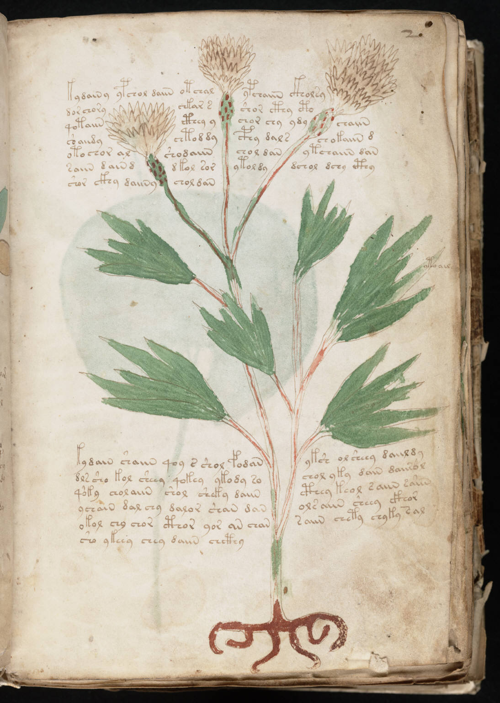

f2r
1kydainy ypchol daiin otchalypchaiin ckholsy2dorchorychkar sshor cthy cth3qotaiincthey ychor chy ydychaiin4chaindychtod dycphy dalschokaiin d5otochor alshodaiinchol danytchaiin dan6saiin dainddkol sorytoldydchol dchy cthy7shor ckhy daiinychol dan8kydain shaiin qoy s shol fodanyksh olsheey daiildy9dlssho kol sheey qokey ykody sochol yky dain daiirol10qoky cholaiin shol sheky daiincthey keol saiin saiin11ychain dal chy dalor shan danolsaiin sheey ckhor12okol chy chor cthor yor an chansaiin chety chyky sal13sho ykeey chey daiin chcthy
